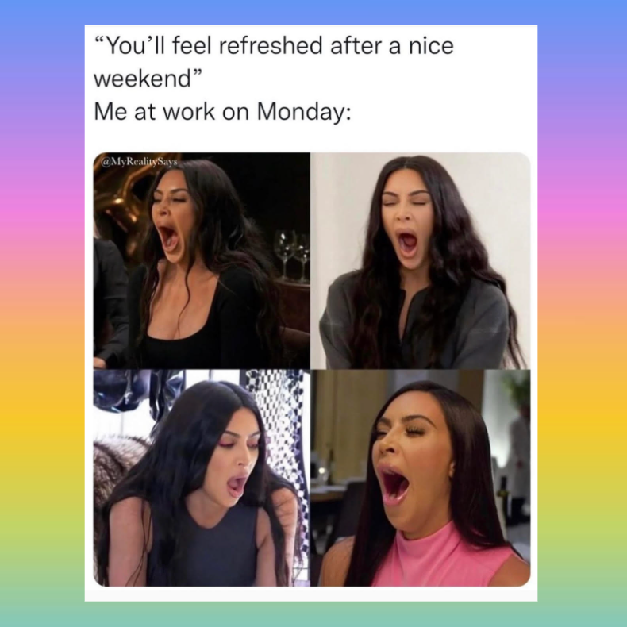

I feel the best weekend days are Friday and Saturday. Reason being, because you sleep the most restful with the least amount of stress induced. You experience more stress-free sleep when you do not meed to worry about waking up early and going to work the next day. Therefore, the best sleep ddays are Friday asd Saturday since you have to do stressful night preparation and sleep calculations on Sunday night.
